Proyek Kolaborasi · Semester Genap 2025/2026 · Juni 2026
Empat praktik,
satu jaringan
yang menyala.
Dokumentasi praktikum Teknik Komputer dan Jaringan: memasang sistem operasi dari nol, menyambung kabel UTP sampai LED LAN tester berkedip semua, membuka pintu folder lewat alamat IP, dan menutup hari dengan mug bermotif hasil sendiri.
Perkenalan
Diri
Hai, saya Sandi Tri Ramadhan — siswa kelas 10 jurusan Teknik Komputer dan Jaringan yang senang menjajal hal baru di dunia teknologi.
Pada proyek ini saya mengerjakan setiap bagian secara mandiri, dengan fokus pada pemahaman konsep sekaligus penerapannya secara langsung. Selama proses ini saya belajar banyak hal tentang kemandirian, disiplin, dan cara menghadapi berbagai tantangan teknis di lapangan.
Meski belum selalu berjalan mulus, saya berusaha memberikan hasil terbaik dan tidak berhenti di tengah jalan. Semoga proyek ini menjadi titik awal yang baik dan bekal pengalaman untuk masa depan saya.
Tujuan Proyek
Membekali siswa TKJ dengan keterampilan teknis langsung melalui empat praktik utama: instalasi Windows 10 LTSC dari media bootable hingga konfigurasi driver, crimping kabel UTP standar T568B tipe straight beserta pengujiannya, konfigurasi share folder antar perangkat lengkap dengan hak akses pengguna, serta proses desain dan cetak mug menggunakan heat press machine — sambil membentuk karakter yang disiplin, bertanggung jawab, dan tidak mudah menyerah.
Praktik Pertama
Instalasi Windows 10 LTSC
Sistem operasi adalah perangkat lunak paling dasar yang wajib ada di setiap komputer. Tanpa OS, perangkat keras tidak bisa berfungsi optimal dan pengguna tidak bisa menjalankan aplikasi apa pun. Praktik ini memilih Windows 10 IoT Enterprise LTSC karena edisinya lebih ringan, stabil, dan mendapat dukungan keamanan jangka panjang — cocok untuk lab dan kebutuhan belajar.
Menyiapkan media instalasi bootable dengan Ventoy
Melakukan partisi & konfigurasi awal Windows 10 LTSC
Menginstal driver perangkat lewat Device Manager
Memahami perbedaan tipe instalasi Upgrade vs Custom
Bahan unduhan untuk praktik ini
Windows 10 IoT Enterprise LTSC 2021
Build 19044.1288 · x64 · en-US · ~4.2 GB
Windows 10 IoT Enterprise LTSC 2021
(Build - 19044.1288)
These ISOs contain below editions.
· Windows 10 Enterprise LTSC
· Windows 10 IoT Enterprise LTSC
| Language | Arch | Link |
|---|---|---|
| English | x64 | en-us_windows_10_iot…ltsc_2021_x64_dvd.iso |
Ventoy2Disk
Flashdisk bootable, minimal 8 GB · exFAT/GPT
Ventoy2Disk X86
Status — READY
Download ISO & Flash Device Bootable
Unduh ISO Windows 10 LTSC dari massgrave.dev, lalu flash flashdisk minimal 8GB menggunakan Ventoy. Pindahkan file ISO ke flashdisk untuk melanjutkan instalasi — Ventoy mendukung banyak ISO sekaligus tanpa perlu ditulis ulang setiap kali ganti.
Pilih Device Bootable di Boot Manager
Setelah ISO dipindahkan, masuk ke Boot Manager dan pilih nama device flashdisk. Cara masuk Boot Manager bervariasi tergantung merek motherboard PC atau laptop (umumnya tombol F2 / F11 / F12 / Del saat menyala).
Windows Boot Manager
UEFI VBOX CD-ROM VB1-1a2b3c4d
UEFI VBOX HARDDISK VBa91cee7f-9b4b37b4
UEFI SanDisk Cruzer Blade 00010221042925104758
UEFI PXEv4 (MAC:0800270796E2)
UEFI PXEv6 (MAC:0800270796E2)
Bahasa, Waktu, & Aktivasi Windows
Pilih bahasa dan format waktu sesuai kebutuhan, lalu klik Install now. Opsi Repair your computer digunakan untuk memperbaiki Windows yang sudah terpasang. Untuk aktivasi, masukkan product key jika punya lisensi — jika tidak, pilih I don't have a product key dan lanjutkan; Windows akan teraktivasi otomatis nanti.
Edisi Windows, Lisensi, & Tipe Instalasi
Pilih edisi yang diinginkan — di praktik ini dipilih Windows 10 IoT Enterprise LTSC. Setujui syarat & ketentuan dari Microsoft (centang I accept the license terms), lalu tentukan tipe instalasi:
Menaikkan versi Windows dari versi sebelum Windows 10, sambil mempertahankan file, setelan, dan aplikasi.
Memilih partisi kosong untuk instalasi bersih — dipakai di praktik ini.
Partisi & Proses Instalasi
Klik New, lalu masukkan kapasitas partisi dalam satuan MB (di praktik ini dialokasikan 25600 MB). Klik Next untuk memulai proses instalasi — tunggu hingga selesai, ditandai dengan komputer melakukan restart otomatis.
Installing Windows
✔ Copying Windows files
Getting files ready for installation (12%)
Installing features · Installing updates · Finishing up
Konfigurasi Awal: Negara & Keyboard
Setelah restart, pilih negara (mis. Indonesia), lalu tentukan tata letak keyboard yang sesuai. Jika tidak perlu menambahkan tata letak kedua, klik Skip.
Koneksi, Akun, & Password
Hubungkan ke internet bila tersedia, atau pilih I don't have internet untuk lanjut. Jika punya akun Microsoft, login langsung — jika tidak, pilih Continue with limited setup. Isi username sesuai keinginan, dan password bersifat opsional (boleh dikosongkan, klik Next).
Partisi, & Driver
Atur preferensi layanan privasi sesuai kebutuhan, lalu klik Accept. Untuk mengecek partisi dan driver, tekan Windows + X:
- Disk Management — klik kanan partisi kosong (warna hitam) → New Simple Volume → isi Volume label di kolom yang tersedia → Next → Finish.
- Device Manager — periksa driver yang belum terpasang, ditandai ikon seru kuning.
Download & Driver
Untuk Mendownload Driver bisa lewat Website Resmi Brand Motherboard atau Brand Laptop
- Mencari Driver Yang Dibutuhkan — Seperti Driver GPU, Audio, Dan Lain Lain
- Lalu Install — Setelah dipasang bisa periksa driver yang sudah terpasang
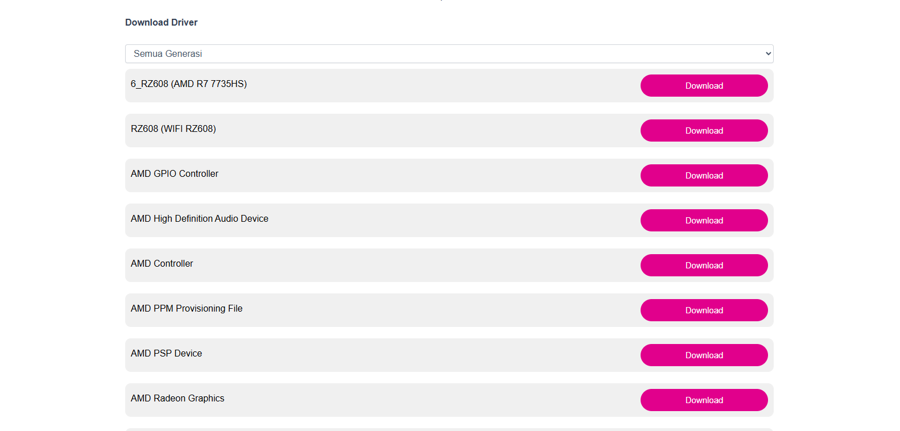
Install Driver & Windows Siap Digunakan
Unduh driver dari situs resmi sesuai merek motherboard atau laptop, lalu instal sesuai instruksi. Cek kembali di Device Manager untuk memastikan semua perangkat sudah terdeteksi tanpa tanda seru. Setelah itu, Windows siap digunakan — tinggal instal software dan lakukan konfigurasi sesuai kebutuhan.
Praktik Kedua
Crimping Kabel UTP — T568B Straight
Kabel UTP (Unshielded Twisted Pair) adalah media transmisi paling umum di jaringan LAN karena murah, mudah dipasang, dan tersedia luas. Agar bisa digunakan, ujung kabel dipasangi konektor RJ-45 melalui proses crimping. Penguasaan teknik ini penting karena merupakan pekerjaan rutin saat membangun atau memperbaiki infrastruktur jaringan.
Mengupas & mengurutkan kabel sesuai standar warna T568B
Memasang konektor RJ-45 dengan tang crimping yang benar
Menguji koneksi kabel menggunakan LAN Tester
Memahami perbedaan fungsi kabel straight & crossover
Bahan & Alat
Urutan Warna T568B (Straight)
Kupas pelindung kabel tanpa mengenai kabel berwarna di dalamnya, lalu urutkan kedelapan kabel sesuai standar berikut — sama di kedua ujung untuk tipe straight.
Standar ini umum dipakai untuk menghubungkan perangkat berbeda jenis, misalnya komputer ke switch.
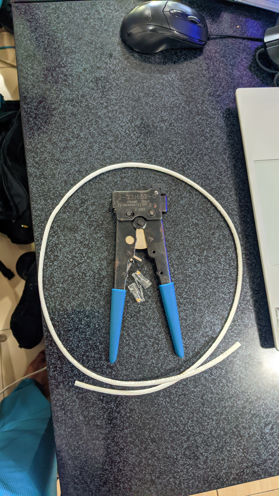
Kupas Kabel UTP
Kupas pelindung kabel — jangan sampai mengenai kabel berwarna di dalamnya.
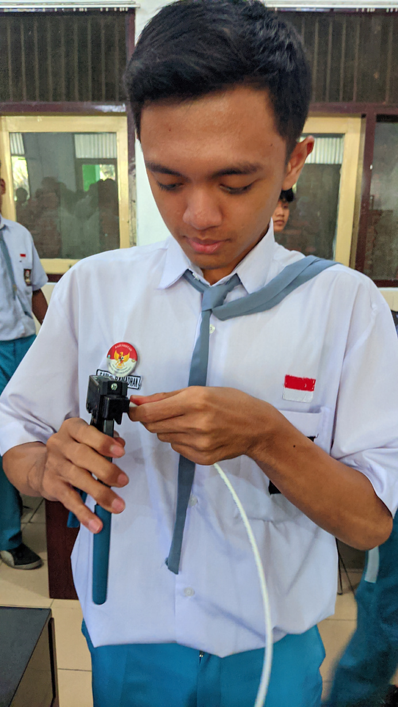
Urutkan Warna
Susun kabel mengikuti urutan T568B: Putih Oranye, Oranye, Putih Hijau, Biru, Putih Biru, Hijau, Putih Coklat, Coklat.
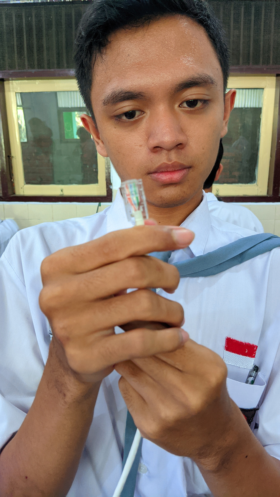
Merapikan Kabel
Ratakan ujung kabel dengan gunting agar pas masuk RJ-45 dan tidak salah urutan saat dikrimping.
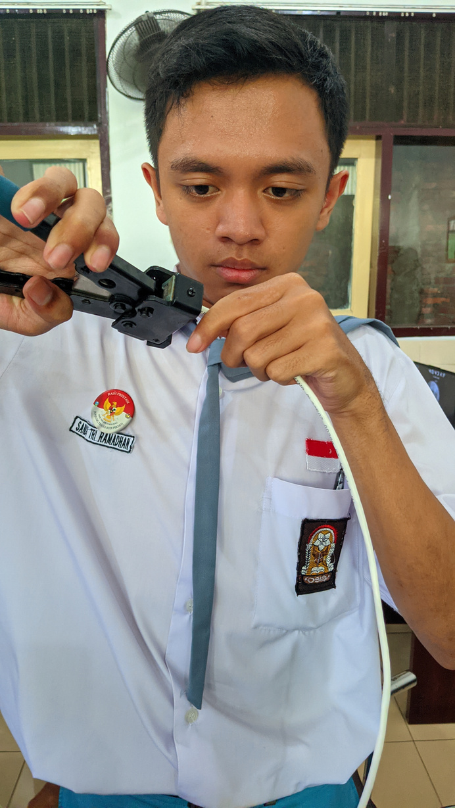
Krimping Kabel
Tekan tang crimping sekuat tenaga agar pin RJ-45 menggigit kabel dengan kuat dan konektor tidak mudah lepas.
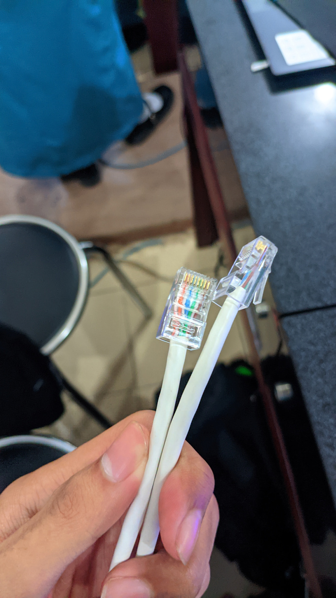
Ulangi di Ujung Lainnya
Setelah satu sisi selesai, lakukan proses yang sama secara identik di ujung kabel lainnya.
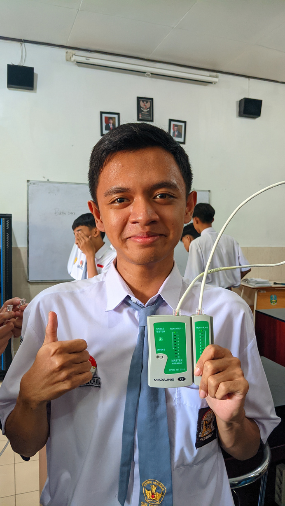
Tes di LAN Tester
Kedua ujung dihubungkan ke LAN tester — nomor 1 sampai 8 harus menyala berurutan. Jika ada yang tidak menyala, ulangi proses crimping.
Praktik Keempat
Desain & Cetak MUG (Sublimasi)
Percetakan digital berbasis sublimasi banyak dipakai di industri kreatif dan merchandise. Praktik ini memperkenalkan alur kerja dari desain digital di Canva atau CorelDraw, pencetakan ke kertas transfer khusus, hingga proses pemanasan dengan heat press machine — keterampilan yang relevan untuk bidang multimedia dan wirausaha.
Membuat desain digital sesuai dimensi & format mug cetak
Menyiapkan kertas transfer sublimasi sebelum heat press
Mengoperasikan heat press machine untuk mencetak desain
Memahami alur produksi merchandise dari desain ke produk jadi
Siapkan Desain Sebelum Cetak
Desain dibuat di aplikasi desain seperti Canva atau CorelDraw, kemudian dicetak ke kertas transfer sublimasi sesuai ukuran permukaan mug.
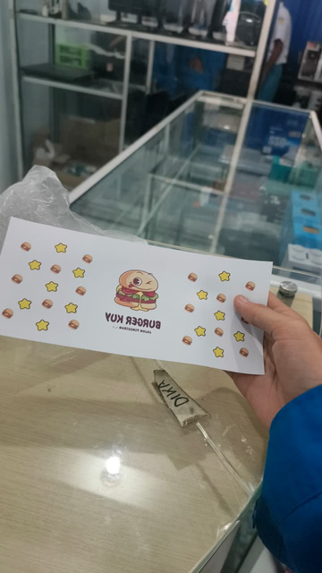
Tempelkan Desain di MUG
Kertas transfer dibungkus mengelilingi mug polos, dipastikan posisinya pas dan tidak bergeser sebelum masuk ke mesin press.
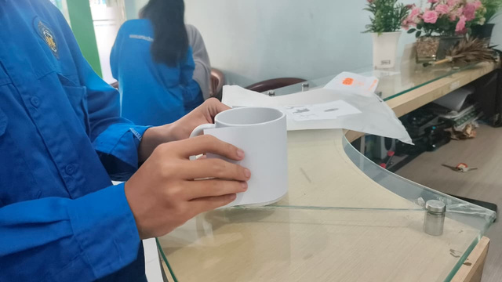
Masukkan MUG ke Mesin Press
Mug yang sudah dibungkus kertas transfer dimasukkan ke heat press machine untuk menempelkan desain secara permanen melalui proses sublimasi.
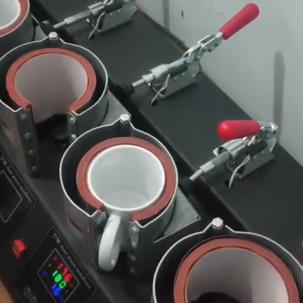
Lepaskan Kertas Desain
Setelah proses pemanasan selesai, mug diangkat dan didinginkan di suhu ruang, lalu kertas transfer yang masih menempel dilepas perlahan.
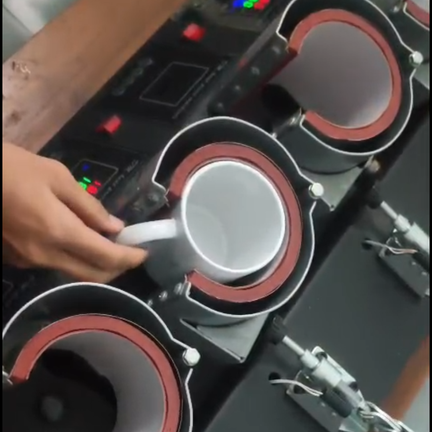
MUG Siap Digunakan
Setelah benar-benar dingin, desain menempel sempurna pada permukaan mug dan mug siap digunakan atau dipasarkan sebagai merchandise.
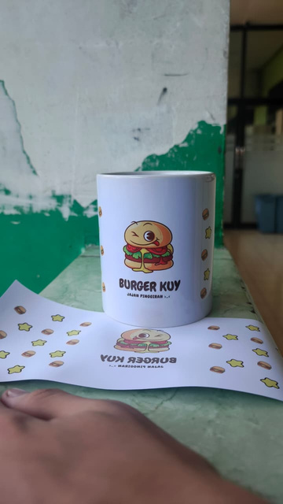
Selingan
Tembang Dolanan — Burger Ceria
Burger enak rasane gurih
Roti empuk isi daging sapi
Tambah keju dadi luwih gurih
Sayur seger gawe sehat ati
Dipangan bareng kanca luwih gurih
Guyub rukun kabeh seneng ati
Penutup
Demikianlah laporan proyek kolaborasi semester genap 2025/2026 yang telah saya susun dengan sepenuh hati. Melalui empat kegiatan praktikum ini — Instalasi Windows, Crimping UTP, Share Folder, dan pembuatan MUG — saya banyak belajar hal baru yang tidak hanya bersifat teknis, tetapi juga membentuk karakter saya sebagai pelajar.
Instalasi Windows mengajarkan pentingnya memahami sistem operasi dari dasarnya. Crimping UTP melatih ketelitian dan kesabaran — satu kesalahan kecil pada susunan warna kabel bisa membuat seluruh koneksi gagal. Share folder memperkenalkan saya pada konsep jaringan komputer yang nyata dan aplikatif. Sedangkan pembuatan MUG membuktikan bahwa dunia TKJ tidak hanya soal kode dan kabel, tetapi juga kreativitas.
Saya menyadari hasil karya ini masih jauh dari sempurna dan masih banyak hal yang perlu dipelajari. Namun saya bangga dengan setiap langkah yang telah saya tempuh secara mandiri dalam proyek ini.
Terima kasih kepada para guru pembimbing dan seluruh pihak yang telah mendukung proses belajar saya. Semoga laporan ini bermanfaat dan menjadi motivasi bagi teman-teman lain untuk terus semangat belajar di bidang Teknologi Komputer dan Jaringan.